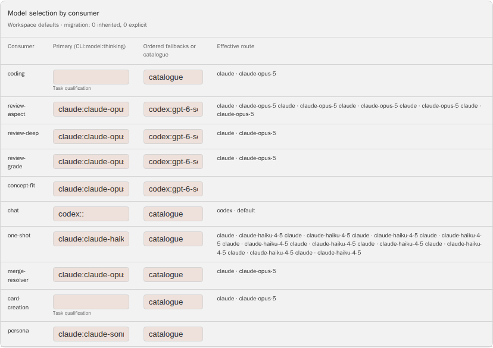
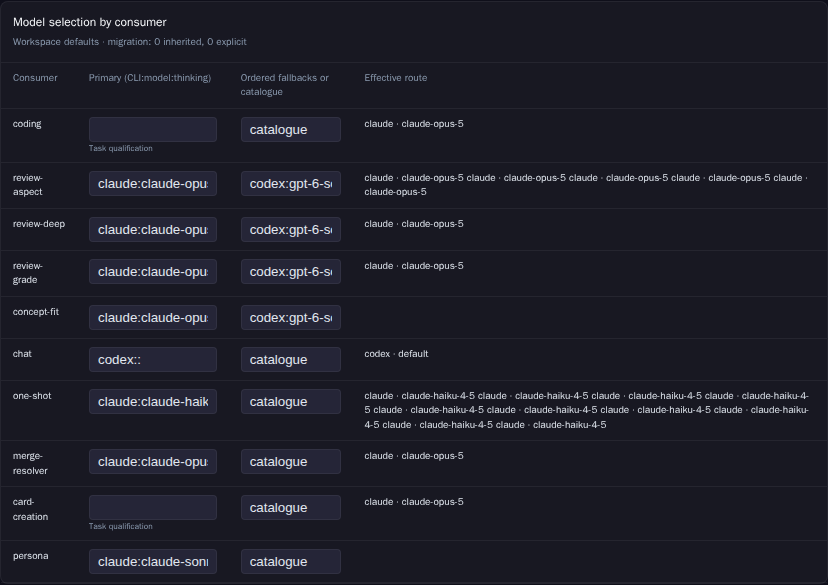
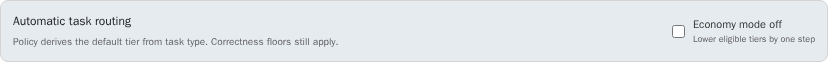
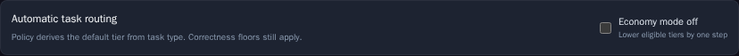
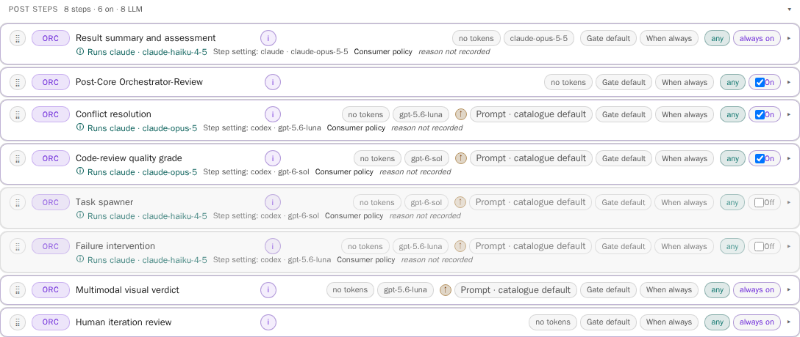
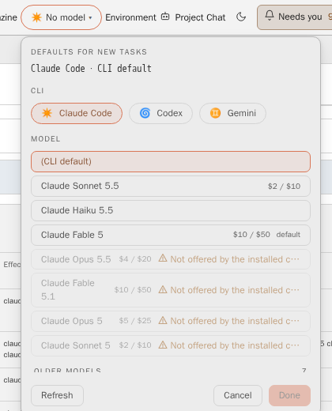

Today nine separate controls decide which CLI, model and reasoning level a run uses, and an operator script re-pins dozens of cards whenever one provider's weekly window runs short. This Dossier proposes one workspace control with five positions. Each position selects, per task kind, a rung from the provider-neutral ladder that Token Economy delivers. Usage and cost follow from the position; the dial is not a weekly budget target. Explicit pins, correctness floors and quota admission keep their current meaning. Creative and visual work is a task kind of its own with its own ladder and its own acceptance: tests are not enough, someone has to look at the result.
Status decision pendingPhase decision-readySource AGT-3951Related AGT-2815, model selection and fallback (MS-1 to MS-8), Token Economy cards "Economy dial: one value from frugal to strong" and TE-83 (creative ladder)
01 Occasion
Robert asked on 17 November 2026 for one control that steers cost and usage. The following points are already decided and are inputs to this Dossier, not open questions:
The control is called, in substance, Frugal to Strong. Its position selects model and reasoning level per task kind directly from the ladder that Token Economy delivers (Token Economy card "Economy dial: one value from frugal to strong").
Usage is a consequence of the position. A weekly budget target is explicitly not the semantics.
The standard rung for normal cards is medium. high is for hard cards only, xhigh is used deliberately.
Reviews stay on Claude Opus 5.5 at low for now.
The operator switched new work between Claude and Codex about 15 times in 2026, each time following whichever weekly window was tighter. Each switch meant a script run that re-pinned cards, adjusted client defaults and touched pipeline steps. This Dossier answers the seven questions of the brief as decision cards D1 to D12, each with a recommended working option, and prepares eight implementation slices. It contains no implementation.
Robert added a second brief the same evening (21:50 and 22:00 UTC). Creativity, visual design, UI aesthetics, interactive 3D scenes and games are a task kind of their own with their own benchmarks. Coding benchmarks such as Terminal-Bench, SWE-bench and ARC say nothing about whether a model builds a beautiful, original and pleasant-to-play result; human-preference arenas and rated generation tests measure that. Token Economy takes this kind as (i) with its own ladder (card TE-83). Section 04 answers the four questions of that addition and the acceptance raster for a 3D game; it adds decisions D13 to D17 and slices ED-9 to ED-11.
02 Current state
The code map below was taken from the repository at 2adbb4f5d on 17 November 2026. Nine sources contribute to the route a run uses. They apply at different moments, and most of them only at card creation.
Control
Where it is set
When it applies
Scope
Client defaults (CLI, model, level)
PUT /api/clients/{id}/defaults, permission workspace.settings.write; header defaults control
Card creation only (TaskMutationService.cs:2108). The create form sends modelExplicit:false, so the policy recommendation replaces the model; the default CLI still chooses the vendor catalogue.
Per client identity
Project registry defaults
Project settings (CliDefault, ModelDefault)
Card creation; the form treats a project model default as explicit
Per project
Economy mode
PUT /api/cli/model-routing/economy-mode; toggle on CLI Management
Card creation, the create preview and run-time qualification; lowers one tier, never below the correctness or economy floor (ModelRoutingPolicyRegistry.cs:131)
Workspace, boolean
Consumer policy primary and fallbacks
PUT /api/model-selection/policy/consumers/{consumer}
At launch through ModelSelectionService, for cards without an explicit pin
Workspace, per consumer class
Project model selection overrides and step pins
PUT /api/projects/{name}/model-selection-overrides/{consumer}, PUT /api/projects/{name}/pipeline-step
At launch; step override, then catalogue step model, then project orchestrator model, then runtime default (PipelineStepConfigResolver.cs:20)
Per project, pipeline type, step
Step "Economy model" checkbox
Pipeline step setting EconomyModel
Aspect steps only; picks a live Codex spark model when no step model is set
At launch when the primary is near its cap; one launch only; equivalence from Token Economy
Workspace, per CLI
Orchestrator model
PUT /api/projects/{name}/orchestrator-model, PUT /api/workspaces/{id}/orchestrator-model
Orchestrator runs; project, then workspace, then platform default (Haiku family). The orchestrator composer accepts GPT models only (OrchestratorChat.cs:645).
Project or workspace
Card pins
PUT /api/tasks/{key}/cli-type, /model, /thinking-level
Later attempts; preference by default, hard waits instead of switching. The UI never sends pinMode, so UI pins are preference pins.
Per card
Figure 1. Five sources act at card creation and four at launch. The stamped card model is what usually runs, which is why a provider switch needs a re-pin script today.
Figures 6 to 9 in Evidence show the CLI Management, pipeline and header surfaces as they read today. Seven findings shape the design:
The route is decided at creation.TaskCrudEndpoints.cs:1141-1172 stamps the recommendation onto a card without a pin. At launch ProjectRunner.cs:2957 takes route?.Model ?? qualification?.SelectedModel ?? info.Model; the route is normally present, so qualification only decides when the card has no model. A control that should take effect for waiting work must resolve at claim time.
The Claude side of the ladder still points at Sonnet and Haiku. The registry's vendorOverrides map sol-medium to Claude Sonnet 5 at medium and luna-medium to Claude Haiku 4.5. Robert's decision (Opus 5.5 at medium as the Claude standard) and the 17 November research (Sonnet 5.5 is not a cheap Opus) both contradict that mapping.
Economy mode saves little. It lowers one tier; for features and bugs that lands on Terra/medium, which the policy itself rates at 0 percent savings against GPT-6 Sol/medium.
The weighted score is documentation only. The six-criterion score in the routing policy is not implemented. Code uses a fixed intake score per task type (chore 15, feature and bug 51) plus text-based floors (P0, fencing, security and data loss force sol-xhigh; protocols, migrations and three or more subsystems force at least sol-medium).
Task kind is narrow.TaskTypes knows bug, feature and chore. TaskModes (coding, planning, research, concept) selects the pipeline, not the model. Fix rounds are a usage kind; the reissue escalation rule exists only in documentation.
Cost per accepted card is review-scoped.ReviewStatisticsFold already computes tokens and USD per accepted card, but over review rows. There is no full-lifecycle figure per model and rung, and no Codex credits probe; CodexQuotaProbe reads weekly percent left from /status.
Defaults diverge from the decision. Aspect steps default to a Codex GPT Mini model at high (PipelineStepModelDefaults.cs); review on Opus 5.5 at low therefore comes from configured overrides, not from the code default.
03 The dial
Positions and rungs
The dial has five positions: Frugal, Lean, Balanced, Thorough and Strong. Balanced is the default and encodes the decisions of 17 November. A position does not name a model. It names, for every task kind, a rung on a provider-neutral ladder. Token Economy owns the ladder: which concrete model and reasoning level each rung means on each provider, versioned like its price snapshots. Studio owns the matrix from position and task kind to rung, the floors and the resolution.
Rung
Claude
Codex
Notes
light
Claude Haiku 5.5, medium
gpt-6-luna, medium
Bounded tasks with a parseable output only
low
Claude Opus 5.5, low
gpt-6.1-sol, low
Replaces sonnet-low as the economy floor for coding work
medium
Claude Opus 5.5, medium
gpt-6.1-sol, medium
Standard for normal cards (decided)
high
Claude Opus 5.5, high
gpt-6.1-sol, high
Hard cards (decided)
xhigh
Claude Opus 5.5, xhigh
gpt-6.1-sol, xhigh
Correctness-critical work (decided: deliberate use)
This is the proposed first revision of the coding ladder. Sonnet 5.5 is not on it: at the same level it is clearly weaker on coding and uses more tokens (Terminal-Bench 22.22 USD per attempt against 14.30 for Opus). That conclusion holds for the coding kinds only; the creative kind (i) has its own ladder, on which Sonnet 5.5 is a candidate (section 04). gpt-6.1-sol replaces gpt-6-sol at the same list price. A level a model does not offer runs at the highest offered rung below it, as the existing ladder rule already does.
Matrix
Each cell is the rung a task kind gets at a position. A floor is the lowest rung the task kind may ever run on; the dial cannot go below it. Balanced is the column the operator decided on 17 November. The standard feature row is (b) feature logic; UI work whose acceptance is visual quality moves to row (i), whose c- rungs are on the creative ladder of section 04.
Task kind
Frugal
Lean
Balanced
Thorough
Strong
Floor
Enrichment: auto-tag, summaries, classification
light
light
light
light
low
light
Chore
light
light
low
medium
medium
light
(b) Standard card: feature logic
low
medium
medium
medium
high
low
Standard card (bug)
medium
medium
medium
medium
high
medium
Hard card
medium
medium
high
high
xhigh
medium
Correctness-critical (P0, fencing, leases, security, data loss)
xhigh
xhigh
xhigh
xhigh
xhigh
xhigh
Research, concept, planning
low
medium
medium
high
high
low
(i) Creative and visual: UI work accepted on visual quality, design variants, generated apps, 3D scenes, games
c-low
c-low
c-medium
c-high
c-max
c-low
Follow-up and fix round
Keeps the card's current route; a semantic failure raises the next fresh attempt one rung (existing reissue rule)
card floor
Review aspect and grade
Claude Opus 5.5 low at every position until the review measurement exists (decided 17 November)
same capability class
Deep review
medium
medium
medium
high
high
medium; xhigh for P0
Merge resolution
medium
medium
medium
medium
high
medium
Orchestrator chat and orchestrator decisions
low
low
medium
medium
high
low
Resolution
Figure 2. Proposed resolution order. The dial is one rule inside the existing model selection service, between overrides and floors.
The dial does not create pins and does not rewrite cards. A card without an explicit pin is resolved at each fresh claim, so moving the dial reaches every waiting card at its next start. A running process keeps its route, and a same-session resume keeps the session's route, as today.
What stays outside
Deterministic pipeline steps, builds, gates and quota probes. They use no model.
Controlled measurement batches and Token Economy A/B runs. They pin explicitly because they measure one route.
Host acceptance probes, which must test a specific model.
Interactive sessions a person starts with a chosen model, such as an operator one-shot with an explicit model.
The quota caps and wait policy themselves. The dial decides what runs; admission still decides whether and where it can run now.
04 Creative and visual work
Creativity, visual design, UI aesthetics, interactive 3D scenes and games are task kind (i). Token Economy keeps a separate ladder for it (TE-83), and its acceptance needs someone to look at the result. This section covers the four points of Robert's addition of 17 November 2026 and the acceptance raster from his 22:00 UTC note.
Coding conclusions stay with coding kinds
All findings of the 17 November research come from Terminal-Bench and from coding cards: "Sonnet 5.5 is not a cheap Opus", "gpt-6.1-sol is better and cheaper than gpt-6-sol", the cost per accepted card per route and the first-review pass rates. They apply to the coding kinds (every row of the matrix except (i)) and are not evidence for (i). Coding benchmarks such as Terminal-Bench, SWE-bench and ARC measure whether a result works. They do not measure whether it is beautiful, original or pleasant to play. For (i) the only evidence so far is Robert's observation: on interactive 3D scenes, Sonnet 5.5 and Opus 5.5 at max are practically level. Data on Sonnet 5.5 at high against Opus 5.5 at low is thin.
Task kinds (b) and (i)
Token Economy letters its task kinds. The brief names two of them: (b) is the standard feature card and (i) is creative and visual work. (b) is split by its acceptance criterion:
Kind
Accepted when
Ladder
Examples
(b) Feature logic
Tests and review prove the behaviour
Coding
An endpoint, state handling, form validation, a UI change built entirely from existing components and tokens
(i) Creative and visual
Visual quality is part of acceptance, so someone has to look at the result and judge it
Creative (TE-83)
Layout and hierarchy of a new surface, design variants as in the Platform UI Lab, the look of a generated app, a 3D scene, a game
The acceptance criterion decides the kind, not the file types touched. A card that changes templates but is accepted by tests is (b). A card whose result has to be looked at before it can be accepted is (i). A mixed card runs as (i) for the whole card. Two existing rules still apply: the correctness-critical kind wins over (i) (P0, security and data-loss signals keep coding xhigh), and the hard flag raises (i) by one rung, as it does for coding.
Creative ladder
Token Economy owns the creative ladder (TE-83), just as it owns the coding ladder. Until TE-83 ships, Studio uses a provisional, versioned mirror. Each cell shows its evidence state, so the surface can label it.
Rung
Claude
Codex
Evidence for (i)
c-low
Claude Opus 5.5, low
gpt-6.1-sol, low
None; coding rung reused
c-medium
Claude Opus 5.5, medium
gpt-6.1-sol, medium
None; coding rung reused
c-high
Claude Opus 5.5, high; A/B arm Sonnet 5.5 high
gpt-6.1-sol, high
Thin (Sonnet high against Opus low)
c-max
Claude Sonnet 5.5, max
gpt-6.1-sol, xhigh
Operator observation: Sonnet 5.5 and Opus 5.5 at max level on interactive 3D scenes
At c-max, Sonnet replaces Opus because the reported quality is level and Anthropic's stated direction is that Opus costs several times more per turn. The measured Claude weights (section 08) confirm or reverse that choice. Sonnet's higher token volume on coding is not evidence for (i). The Codex rungs have no creative measurement. A same-rung fallback to Codex is allowed for (i), and the selection ledger marks it "unmeasured for creative". Haiku 5.5 and Luna are not on the creative ladder.
Detection
Today the runner sends a coding card to ui-iteration-task-pipeline when EvidenceGate.MatchesUiHeuristic matches and the change set touches a frontend template, style or component. The heuristic matches every bug, the tags ui, ux, frontend, css, visual, e2e, playwright and area-frontend, and title words such as layout, button or modal (EvidenceGate.cs:56-72, 129-144). It answers "can this be proved with a screenshot", not "is visual quality the acceptance criterion". Used as the (i) signal, it would put every UI bug on the creative ladder. The resolver of slice ED-2 therefore uses these signals, in this order:
Order
Signal
Source
Result
1
Explicit kind on the card: creative or feature-logic
New optional field, set at creation, by a planner or later; the AGT-2815 plan step may set it
That kind; only correctness-critical wins over it
2
Project default kind
New project setting; set for projects whose product is visual: the Platform UI Lab, apps generated from the static-web template, games and 3D scenes
(i) for feature cards; bugs stay bugs unless signal 3 or 4 applies
3
Card origin
A card that asks for design variants to compare; a playthrough finding classified as design or game feel (not as a technical failure); a Human Gate feedback round of an (i) card
(i); a feedback round inherits its card's kind
4
Tags and acceptance text together with UI pipeline routing
Tags visual, design, creative, game, 3d; acceptance text that names look, layout, hierarchy, animation, camera or game feel
(i); text alone does not count, so prose about design does not move a backend card
5
UI pipeline routing alone
EvidenceGate as today
Coding kind; the visual QA pair still runs as today
The resolver records which signal decided, for example "project default: creative" or "playthrough finding: design". That reason appears in the selection ledger and in the dial's deviation list. With kind (i), the dial selects the (i) row of the matrix: c-medium at Balanced, so Opus 5.5 medium on Claude. Reviews stay as decided: code-review aspects and grade run on Opus 5.5 low. The visual verdict stays a bounded defect gate on its supporting model. The visual grade proposed below is a review consumer and is held at Opus 5.5 low together with the other reviews.
Acceptance
Tests are necessary but not enough for (i). The UI pipeline already has three of the parts needed (docs/system/contracts/ui-task-pipeline.md):
post-ui-iteration-artifact: each iteration has to write changes.md and at least one image.
post-ui-visual-capture and post-ui-visual-verdict: up to four 1440 by 1000 captures from the delivered checkout, judged by a multimodal one-shot. The one-shot returns acceptable or clear-defect, using the bounded categories truncation, misalignment, placeholder noise, design-token violation, overlap, overflow, unreadable and broken layout.
post-ui-human-review-gate: the person chooses finish or feedback, with at most four iterations by default.
Three things are missing for (i): a judgement of quality rather than defects, video for motion and play, and a variant comparison. A record that Token Economy can use is also missing. The Quality Studio visual quality step (post-analysis-visual-quality) is still a stub (PipelineCatalogue.cs:758-768). The aspect visual review checks layout against the style guide (prompts/runtime/review-aspect-visual-review.md).
Acceptance raster
Robert's four dimensions, with the example of a 3D game. For in-product UI work, game feel means interaction feel: focus, hover, transitions and response. Each dimension is scored from 1 to 5: 1 means broken or absent, 3 acceptable, 5 worth showing.
Dimension
Example in a 3D game
Automatic check
Agent with screenshots or video
Robert
Counts as ladder evidence
Originality
Does the game have an interesting idea or mechanic?
Not checkable
Advisory score with one sentence of reasoning, compared with earlier variants in the project
Decides, by score or by variant pick
Robert's score or pick only
Design
Do colours, lighting, shapes, animation and interface fit together?
Partly: visual verdict defect categories; for UI also the style-guide and token rules and contrast (axe)
Score from light and dark captures, or from frame captures of the scene
Confirms or corrects
Robert's score; the agent's after calibration
Game feel
Are controls, camera, tempo and feedback pleasant?
Proxies only: input-to-response latency, frame-time stability, camera clipping in the scripted run
Plays a scripted and a free session through Playwright, records video, scores
Decides
Robert's score; the proxies as context
Technical
Do collisions, game states, restart and performance work?
Yes: a scripted playthrough checks collisions, the states start, pause, win and lose, restart to a clean state, a frame-time budget, and no page errors
Explains failures
Not needed
Yes, directly
An (i) card is accepted when three conditions hold. The technical check passes; it is a gate like the build-test gate. The visual verdict reports no clear defect. Robert chooses finish in the Human Gate. The Human Gate shows the agent's advisory scores next to four optional rating controls. A rating counts as Robert's only when he sets it. Choosing finish without ratings records "accepted" and keeps the agent's scores labelled as advisory. When a card produces variants, the Human Gate shows them side by side without model names, and Robert's pick is recorded.
Evidence back into the ladder
Figure 3. Proposed acceptance and evidence loop for (i). Only Robert's ratings and picks, plus automatic technical results, count as ladder evidence until the agent grade is calibrated.
For every (i) card that is finished, abandoned or reaches the iteration cap, Studio writes one creative-evidence record to the selection ledger and exports it to Token Economy for TE-83:
Route: provider, model, level, rung, ladder version and dial position.
Course: iterations until finish, whether the cap was reached, and the visual verdict result per iteration.
Cost: the full-lifecycle cost per card from slice ED-5.
Scores: per dimension, the score and its rater (automatic, agent or operator); for agent scores, also the grader's route.
Pairwise picks: when variants from different routes were compared blind, the winning and losing route per pair.
Pairwise picks are the same kind of signal as a human-preference arena, measured on our own work. TE-83 aggregates them per route, for example with a Bradley-Terry fit. As a proposal, a rung's model changes only after at least 20 comparisons and only when the interval excludes parity. Robert's open question, Sonnet 5.5 at high against Opus 5.5 at low, is answered this way (section 08). The first-iteration finish rate per route is the creative counterpart of the coding first-review pass rate.
Agent scores count as ladder evidence for a dimension only after calibration. The agent's scores must lie within one point of Robert's on at least 80 percent of the last 20 cards they both rated. Originality and game feel will probably stay human-only. Technical results count directly.
05 Alternatives
Four ways to reach one control were compared.
A · Rung dial over the selection service
Five positions, a matrix from position and task kind to a provider-neutral rung, Token Economy's ladder turns the rung into model and level. Resolved at claim time as one rule inside ModelSelectionService. Existing overrides become expert settings shown as deviations. Provider choice is separate and quota fallback means "same rung, other provider".
B · Named presets
Each position is a complete route set authored by the operator: one concrete model and level per consumer and provider, stored as a policy file. Simple to read. Every model release or ladder change requires editing five presets by hand, and quota fallback still needs a separate equivalence table.
C · Weekly budget target
The operator sets a target such as "70 percent of the Claude week". A controller moves the position up or down to hit it. Robert excluded this semantics; it is listed so the reason is recorded. Cost per card would change mid-week without anyone moving anything, and a card's rung would depend on when it started rather than what it is.
D · Keep the levers, add a bulk switch
Keep the nine controls and turn the operator scripts into a product action that re-pins all waiting cards and rewrites defaults for one provider. Least new code. It keeps creation-time stamping, turns every switch into many explicit pins and leaves the per-task-kind question unanswered.
Criterion
A Rung dial
B Presets
C Budget target
D Bulk switch
One control for cost and usage
yes
yes
indirect
no
Matches the decided semantics (position selects model and level)
yes
yes
no
no
Reaches waiting cards without re-pinning
yes
yes
yes
no, writes pins
Survives a model release without hand edits
yes, ladder update
five presets
yes
script edit
Provider switch as one action
same rung
needs a table
automatic
bulk rewrite
Predictable cost per card
yes
yes
drifts in the week
yes
Effort
medium
small
large
small
Creative and visual work
Three ways to handle kind (i) inside alternative A were compared.
I-1 · Own kind, own ladder, visual acceptance
(i) is a row of the matrix on the creative ladder of TE-83. It is detected by explicit kind, project default, card origin and signals together with UI pipeline routing. It is accepted by the four-dimension raster, and Robert's ratings and blind picks flow back to Token Economy as evidence.
I-2 · Feature on the coding ladder plus the visual verdict
No new kind. UI cards stay (b) and the existing defect verdict and Human Gate stay as they are. Nothing new to build. The coding conclusions, including the exclusion of Sonnet, would then govern creative work without evidence, and nothing would be learned about which route builds better-looking results.
I-3 · Creative work always at the top rung
Every (i) card runs at max regardless of the dial. Safe for quality and simple. It removes (i) from the dial, the most expensive setting becomes the default for a growing share of work, and the cheaper Sonnet high against Opus low question is never tested.
06 Recommendation
Recommended default
Build alternative A. One workspace dial with five positions, Balanced as the default, optional per-project position. Resolve it at claim time inside the existing model selection service, after pins and expert overrides and before floors. Take the ladder from Token Economy, with a versioned Studio mirror until the Token Economy card ships. Make the provider a separate preference that follows weekly headroom with the existing hysteresis, sticky within a card, and let quota fallback mean the same rung on the other provider. Show position, matrix, expected cost per accepted card and expected weekly percent per provider on CLI Management. Replace economy mode and the operator scripts; keep step, project and orchestrator routes as expert settings.
The main reason is the first finding: the cost of today's setup is not the number of controls but that the route is fixed when a card is created. Only a claim-time rule lets one change reach every waiting card. The rung abstraction is the second reason: a provider switch and a quota fallback become the same operation, and a model release is a ladder update instead of a migration.
At Balanced the dial reproduces the 17 November decisions exactly: normal cards at medium, hard cards at high, xhigh only through the correctness floor, reviews on Opus 5.5 low. Turning the dial on is therefore not itself a behaviour change for normal cards; it removes the stamped Sonnet and Haiku routes on the Claude side and moves Codex from gpt-6-sol to gpt-6.1-sol.
For creative and visual work, take I-1. Split (b) into feature logic and (i). Detect (i) from the explicit kind, the project default and the card origin, and from signals only together with UI pipeline routing. Run (i) on the creative ladder at c-medium at Balanced, with Sonnet 5.5 max at the top rung. Accept (i) with the four-dimension raster: the technical check is automatic, design and feel are graded by an agent from captures and video, and Robert decides in the Human Gate. Return per-card evidence records and blind pairwise picks to TE-83. The coding conclusions of 17 November stay limited to the coding rows.
07 Surface
The dial replaces the economy mode toggle at the top of CLI Management (#/workspace/settings/caps). It adds no new header element: the header usage cockpit decided against a global model chip because concurrent runs use different routes, and a dial position chip would carry the same problem. The usage sheet names the position in one line.
Figure 4. Proposed surface, not a capture of the product. Cost figures are the 17 November medians; weekly bars, deviation counts and the history line are placeholders.
The section shows:
Position and the provider preference, both editable by a holder of workspace.settings.write.
What runs per task kind at this position on the preferred provider, with the rung and the concrete model and level.
Expected cost per accepted card per task kind: the median from our ledger when the cell has at least ten accepted cards in 28 days, otherwise a Token Economy estimate labelled "estimate".
Expected weekly percent per provider at this position: the last four weeks' mix of task kinds, times cost per accepted card, converted to percent of the week (Codex: credits at list price times 25; Claude: measured weights, see the measurement plan).
Deviations: counts of card pins, expert overrides and project positions that differ from the dial, each linking to its list.
History: who moved the dial or the provider preference, when, from where to where, with an optional note. The same events go to the selection ledger.
The (i) row shows its route, the cost per accepted card labelled "estimate" until enough cards exist, and a second line with the number of operator ratings and blind picks behind the current creative ladder version.
A card whose pin differs from the dial shows the existing model chip with a second line, for example "Pinned Opus 5.5 high · dial: medium". Hovering over a position shows its column of the matrix and the expected week before the operator commits.
08 Measurement plan
Codex is computable: OpenAI states that credits equal list price times 25, so a run's credit cost follows from its token counters and the Token Economy price snapshot. The plan's weekly allowance is not published per account; it is calibrated by comparing computed credits with the change in the weekly percent that CodexQuotaProbe reads over the same interval.
Claude is not computable. Anthropic only states the direction ("Opus costs several times more per turn than Sonnet, and Sonnet more than Haiku"). To show real subscription cost the dial needs a measured weight per model: weekly percentage points per accepted card.
Cells. Opus 5.5 at low, medium and high; Haiku 5.5 at medium; Sonnet 5.5 at medium, as the reference that justifies its absence from the coding ladder and as the weight the creative ladder needs, because Sonnet 5.5 is a creative candidate. Five cells. A weight is per model and token class, so the Sonnet cell also covers Sonnet at high and max.
Fixtures. Twelve comparable cards per cell, drawn from the Token Economy task data set, each with a deterministic acceptance check. The same twelve cards run in every cell.
Isolation. A measurement lease holds the Claude account for the batch: quota admission sends every other Claude launch to Codex or makes it wait while the lease is held. Batches run in a quiet window, one cell per window.
Readings. The Claude weekly percent from ClaudeQuotaProbe before the first and after the last card of the batch, plus each card's four token counters (input, cache write, cache read, output) from the ledger. A batch must move the weekly figure by at least five points so that whole-percent rounding stays below ten percent of the signal.
Fit. Per model, a least-squares weight per token class so that the sum over the batch's tokens reproduces the measured points; from it, points per accepted card with an interval. Repeat each cell twice to see stability.
Publication. A versioned weight table with date, sample and interval. The dial shows Claude weekly percent from this table and labels cells without a measured weight "estimate". Re-measure each quarter, and after any Anthropic plan or model change.
Budget: 60 cards per round, two rounds. At the 17 November medians (about 4.57 USD per accepted Opus medium card as list-price equivalent) that is in the order of 500 to 1,000 USD list-price equivalent, spent inside the subscription during quiet windows.
Creative quality batches
The weight measurement shows what a creative route costs. It does not show whether the route builds better results. That needs a separate, blind batch judged by a person:
Briefs. Twelve creative fixture briefs: three in-product UI surfaces, three design-variant requests, three small generated apps and three interactive 3D scenes or games. TE-83's creative task set replaces them once it exists.
Arms. Sonnet 5.5 high against Opus 5.5 low, the pair with thin data. On the 3D subset, also Sonnet 5.5 max against Opus 5.5 max, to confirm the reported parity on our own work.
Judgement. Each brief runs once per arm with explicit pins. The technical check runs automatically. Robert sees each pair side by side without model names, picks one and may score the four dimensions. The agent grade runs too, as calibration data.
Use. The picks and scores become creative-evidence records with rater operator. TE-83 decides whether a rung changes. Cost per brief comes from the ledger, Claude weekly percent from the weight table.
Budget: 30 runs per round (12 plus 12 plus 6), each a full UI iteration, and about one hour of Robert's time for 15 blind comparisons.
09 Migration
Control today
With the dial
Migration
Economy mode
Replaced
On becomes Lean, off becomes Balanced, once. The endpoint stays readable for one release and reports the derived state.
Client default model and level
Retired for routing
No longer stamped onto new cards. The default CLI remains as a personal hint in the create form only.
Project registry model default
Expert setting
Kept, shown as a deviation; no longer treated as an explicit card pin at creation.
Consumer policy primary
Generated from the dial
A row equal to the dial's Balanced result becomes inherited; a different row stays as an expert override.
Pipeline step and project overrides
Expert setting
Same rule as the AGT-3479 migration: values equal to the dial result become inherited, others stay explicit and appear as deviations.
Step "Economy model" checkbox
Retired
Reviews are held at Opus 5.5 low; the flag is read for one release and then ignored.
Quota fallback profiles
Replaced by same-rung
Explicit profiles that differ from same-rung stay as expert routes; gpt-6-sol:xhigh to Opus xhigh becomes a same-rung case.
Orchestrator model
Expert setting
Unset values follow the dial row; set values stay. The GPT-only composer restriction becomes a provider rule of that row.
Card pins
Unchanged
A dry-run inventory classifies pins whose task history shows a script actor or a bulk pattern; the operator confirms before they are cleared. Human pins stay.
Stamped recommendations on unpinned cards
Ignored at claim
Cards with modelExplicit=false are resolved by the dial at their next fresh claim. Cards in Progress, Auto Review or Human Review are not touched.
Operator re-pin scripts
Retired
Replaced by the provider preference and the dial; documented as removed.
Nothing is rewritten for a running card. A card mid-round keeps its route until its next fresh claim, and a same-session resume keeps the session's route. The migration writes one dial-migrated event to the selection ledger with the counts.
10 Evidence
Figure 5. Median list-price cost per accepted card and first-review pass rate per route, from the operator's research of 17 November 2026. Selection was not random.
The creative section makes no new claim about the look of a product surface. Its facts are cited from code and contracts at 8ed02c605, and its Human Gate ratings are a proposal. The captures below come from the isolated pinned demo workspace, not from a production installation. They prove where the controls are and how they read today; the demo seed's route values are not the operator's live configuration.
Light

Ten consumer rows, each edited separately
Dark

Figure 6. CLI Management sets the route per consumer class in ten separate rows, each with its own primary and fallback; there is no single value that moves them together.Light: captured from the isolated pinned demo workspace (worktree test stack, commit 2adbb4f5d, route #/workspace/settings/caps), Playwright Chromium at 1440 by 1000.Dark: captured from the same stack and route.
Light

Dark

Figure 7. Today's economy control is one checkbox, "Economy mode off", whose only effect is "Lower eligible tiers by one step".Light: captured from the isolated pinned demo workspace (commit 2adbb4f5d, #/workspace/settings/caps).Dark: captured from the same stack and route.
Light

Step setting and running route differ
Figure 8. Every pipeline step carries its own model setting, and the route that runs can differ from it: Conflict resolution is set to codex gpt-5.6-luna and runs claude-opus-5, with "reason not recorded".Light: captured from the isolated pinned demo workspace (commit 2adbb4f5d, Demo App, #/projects/PROJ-001/deploy?view=steps, Post steps group).
Light

Figure 9. A third place to choose CLI and model sits in the header: "Defaults for new tasks", stored per client identity.Light: captured from the isolated pinned demo workspace (commit 2adbb4f5d), header defaults control opened on #/workspace/settings/caps.
11 Open decisions
Each question has a preselected recommendation. Implementation cards work with it unless another answer is recorded.
D1 · Where does the dial apply?
D2 · How many positions?
D3 · Which runs does the dial govern?
D4 · How do card pins relate to the dial?
D5 · May the dial go below a floor?
D6 · How is the provider chosen, and what does quota fallback do?
D7 · How is a card's task kind determined?
D8 · What do follow-up and fix rounds run on?
D9 · Where does the dial live in the product?
D10 · Which figures does the dial show?
D11 · How is the Claude weight per model measured?
D12 · How do today's controls migrate?
D13 · How is creative and visual work handled?
D14 · How does Studio recognise an (i) card?
D15 · What does the creative ladder use until TE-83 ships?
D16 · Who judges an (i) card, and on what?
D17 · How do creative results reach the ladder?
12 Slices
Eleven implementation slices are prepared in workbench.json. They are promoted after the decisions above are recorded; each uses the recommended option unless another is recorded.
Slice
Scope
Depends on
ED-1
Ladder and dial policy: rung ladder (Token Economy with a versioned Studio mirror), positions, matrix, floors, position store for workspace and project, history, API
none
ED-2
Task kind resolution from consumer, task type, mode, text floors and a hard flag
ED-1
ED-3
Claim-time resolution: dial as a selection rule, unpinned cards resolved at each fresh claim, same-rung fallback, sticky follow-ups, reissue escalation
ED-1, ED-2
ED-4
Provider preference: Claude first, Codex first, follow headroom with hysteresis, sticky per card
ED-3
ED-5
Cost and usage projection: full-lifecycle cost per accepted card per task kind and route, Codex credits, weekly percent per provider per position
ED-1
ED-6
Dial surface on CLI Management, deviations, card chip second line, history
ED-3, ED-5
ED-7
Claude weight measurement: batch harness, measurement lease, weight table
ED-5
ED-8
Migration of the scattered controls and documentation update
ED-3, ED-4, ED-6
ED-9
Creative kind (i): provisional creative ladder, matrix row, explicit and project default kind, origin and signal detection, same-rung fallback marked unmeasured
ED-1, ED-2, ED-3
ED-10
Creative acceptance raster: scripted playthrough check, agent grade from captures and video, Human Gate ratings and blind variant comparison
Product scenario: scripted playthrough of a generated app with a designer role.
backend/Features/Runner/EvidenceGate.cs, backend/Features/Pipeline/PipelineCatalogue.cs, prompts/runtime/review-aspect-visual-review.md, backend/Shared/Models/CliModels.cs (Sonnet 5.5 and Opus 5.5 offer max) at 8ed02c605.
backend/Policies/model-routing-policy.v1.json, backend/Features/Tasks/TaskCrudEndpoints.cs, backend/Features/Runner/ProjectRunner.cs, backend/Features/Pipeline/ModelRoutingPolicyRegistry.cs, backend/Features/Cli/Selection/ModelSelectionService.cs, backend/Features/Tokens/Aggregation/ReviewStatisticsFold.cs at 2adbb4f5d.
14 Implementation
Delivery slices append their current implementation status here. Decision content above remains unchanged.